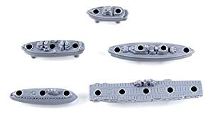
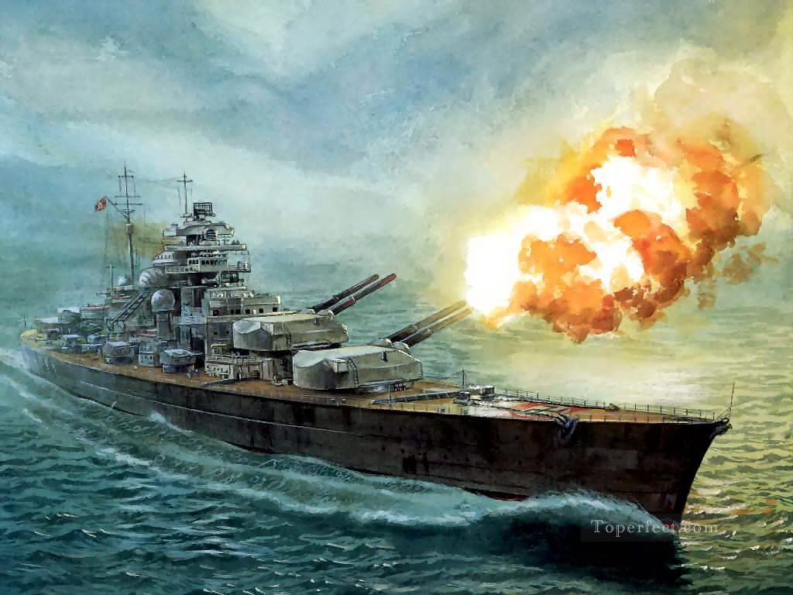

Let Me Explain a Few Things to Jog Your Memory...

Welcome to Battleship the fast paced guessing game, you are the commander of a fleet of five ships. These ships have trusted you to guide them into battle against the enemy fleet of the same size. Get your wits about you, as you prepare to face the mighty enemy commander
The Board
The area you have to fire upon is a ten by ten grid (if you are confused commandeer I have placed a picture to teh right as an example). You must make your best guess and fire upon a square that hides an enemy ship. Our spotters will mark red when they see you hit a ship, or green if you have missed. Don't worry the enemy ships do not move, once you fire on a spot you don't have to worry about ships moving around.
Placing your ships
An important part of being a commander is deciding how to place your ships so the enemy cannot find them. At the beginning of the game you will have a chance to place your ships. The Row box decides how far to the right you will go, one means farthest to the left and ten means the farthest to the right. The column box decides how far down you will go, one is the highest and ten is the lowest. The Orientation box decides if you want your ships horizontal, left to right, or vertical, up down. Once you are done deciding click the done button. We have faith that will make the best decision!
Your Ships
As I said before there are five ships that you can control. Let me list them out for you: Carrier - This holds all your airplanes so it has to be the largest ship of them all! It takes up five game spaces to place. Battleship - You sank my battleship! Just kidding, we do not want to joke about such grave matters, there are many lives aboard this ship. This ship takes up 4 game spaces. Cruiser - This little power house takes up three game spaces. Submarine - Bloop bloop, that is the sound a radar makes, this is important to remember commander. This one also takes up three game spaces. Destroyer - They say the destroyer of worlds is but a drop away. I have no idea what this means. This ship takes up 2 game spaces and is your littlest ship. Take care of them.
Firing
All jokes aside, firing is the most important part of your job commander. Firing is where you get to decide what location to hit, and if we destroy all the targets then we win the game. As you may have noticed, each ship has health, which is the same as the length of that ship. This means that the carrier gets 5 health, the battleship 4, the cruiser and submarine get 3, and the destroyer gets 2. You have to hit all sections of the ship in order to sink it. You fire by choosing which row, left to right, and column, up and down, that you would like to fire at and then hit the fire button. if you hit a ship then the square turns red, and if you miss it turns green. Once you defeat all the enemy ships then we win! We can all go back to our families, and you return the hero to the people.
It's Time to Decide
That is all I have to share with you commander, we put our trust into your hand. With your leadership we can win this fight and go on to live another day. So, what do you say, are you in?